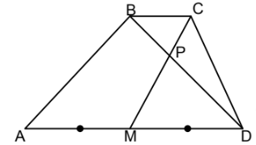
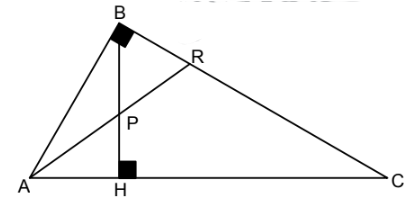
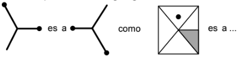
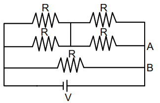
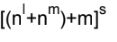
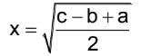
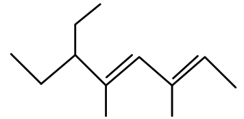

1. Lucy a los 18 años deja su pueblo natal para vivir en Puno. Ella identifica que las costumbres y creencias son diferentes, sin embargo, las acepta y comparte sin dejar de recordar las propias. Lucy está desarrollando:
2. Es una conducta ética que sirve para el apoyo de las personas más desprotegidas. Esta corresponde a la:
3. El Contralor General de la República es designado por el Congreso a propuesta del Poder Ejecutivo, por siete años. Puede ser removido por el ___________:
4. Marco se altera y expresa su enojo a un compañero por su falta de responsabilidad para presentar una tarea. Alguien le hace notar que su forma de proceder no fue correcta y que debería tener un comportamiento__________.
5. Luis tiene entre 18 y 25 años, es así que ella desarrolla:
6. Raúl no maneja su automóvil hace un tiempo, pero su hijo sufrió un accidente y por esta emergencia, se ve en la necesidad de conducir, y sin ningún problema logró llevarlo al hospital. ¿Qué tipo de memoria se asocia con la situación descrita?
7. Brianna escribe un ensayo sobre la libertad en el Medio Oriente y la imposición de algunas costumbres en ciertos países. ¿A qué tipo de valores se hace referencia?
8. En un colegio se realizó un concurso de Matemáticas; el examen fue virtual y la gran mayoría hizo trampa ya aprueban; sin embargo, Meghan decide no hacer trampa, pero igual aprueba. El argumento hace referencia a:
9. En una clase de filosofía Diana explica a sus alumnos que el verdadero conocimiento se encuentra en el alma, declara que una vida no examinada no vale la pena ser vivida. El argumento hace referencia a la filosofía de:
10. Determine el conjunto de valores de k para que |1 1 2| |2 k 0| = E |0 -2 k| Sea invertible
11. Fabricar 100 y 150 televisores cuesta S/40000 y S/55000, respectivamente. Si el costo y la cantidad de televisores está representado por un modelo lineal, ¿Cuánto costará fabricar 180 televisores?
12. Para x ε [0; 2π], el número de soluciones de la ecuación sen 2x – senx + 2cosx = 1 es:
13. La diferencia del número de diagonales totales de dos polígonos de n y n – 2 lados es n + 3. El polígono que tiene n + 2 lados es un _____________
14. Si la función: T(x)=log7(9x+4) Representa la temperatura en °C en un tiempo x dado en horas; halle la función inversa y diga en que tiempo la temperatura será 2°C
15. En la figura mostrada, ABCD es un trapecio. Determine el área de la región sombreada si las áreas de los triángulos BPC y MPD son 4m2 y 16m2 , respectivamente
16. En la figura mostrada, BP=BR=7 y PH=5. Determine la medida de RC
17. Lo que gana y gasta Raúl suman S/3150 y están en relación de 4 a 3, respectivamente. ¿En cuánto tiene que disminuir sus gastos para que la relación sea de 8 a 5?
18. De 40 postulantes a la UNSA, 22 son varones, 15 postulan a sociales; de las mujeres, 6 postulan a ingenierías; y de los varones, 9 a biomédicas y 8 a sociales. Se eligen 4 al azar y resultan ser postulantes a ingenierías. ¿Cuál es la probabilidad de que tres sean varones y una sea mujer?
19. En una tienda dedicada a la venta de licores se tiene una mezcla de 40 litros al 50% de alcohol y otra de 60 litros al 20%. Si ambas se vierten en un recipiente, ¿Cuál será el porcentaje total de alcohol en la mezcla resultante?
20. Un caño llena de piscina en 5 horas y un desagüe la desaloja en 3 horas. Si se abren ambos cuando la piscina está llena, ¿en cuánto tiempo estará a la mitad?
21. Hace 3 días se cumplía que el ayer de ayer de pasado mañana de anteayer del posterior al anterior era jueves. ¿Qué día de la semana será, cuando a partir de hoy transcurrirán tanto días como los días que pasan desde el ayer del ayer de mañana de anteayer de pasado mañana de ayer hasta el día de hoy?
22. Un postulante a la UNSA se propuso el siguiente reto: el primer día resolver 1 problema de matemática; el segundo día, 3; el tercer día, 8; el cuarto 16; el quinto, 27; y así sucesivamente. ¿Cuántos problemas tendrá que resolver el décimo día?
23. En una caja hay 21 bolas cuyos pesos son 1, 3, 5, 7, 9,..., 41 gramos respectivamente. Si se extrae cierta cantidad de bolas, el peso total de las bolas disminuye en 405 gramos. ¿Cuál es la mayor cantidad de bolas que quedan en la caja?
24. Complete la analogía gráfica
25. En el partido Perú – Brasil, en el último minuto hay un tiro libre para Perú. Paolo Guerrero se prepara para patear, la distancia desde donde se cobra la falta y el fondo del arco es de 16,9 m. si Paolo patea la pelota con una rapidez inicial de 13m/s, ¿con qué ángulo debe patear para que la pelota llegue al fondo del arco sabiendo que recorrerá el máximo alcance posible? Usar g=10m/s² .
26. La longitud del transbordador Endeavour antes de viajar medido por un observador en la Tierra, es 30 m. el transbordador ahora está rotando la tierra con una rapidez v=√3/2C. ¿Cuál será la longitud del transbordador medido por el observador en la tierra? C=velocidad de la luz en el vacío.
27. Juan desea mover una caja que pesa 10N por un plano inclinado que hace 30° con la horizontal. Sabiendo que el coeficiente de fricción cinético es μc=√3/3 , ¿cuál será la fuerza mínima necesaria para que Juan mueva la caja a velocidad constante? Usar g=10m/s²
28. Dos cargas q1=+Q y q2=+Q que están separadas una distancia d, experimentan una fuerza F. si ahora q1=+2Q, q2=+2Q y la distancia es 2d, ¿Cuál es la fuerza que experimentan q1 y q2?
29. En el circuito mostrado en la figura, el valor de R=2Ω y V=10 V. ¿Cuál es el valor de la corriente eléctrica que circula por los puntos A y B?
30. Los ciclos biogeoquímicos consisten en el reciclaje de los elementos químicos de la materia desde el medio ambiente hasta los seres vivos y de regreso al ambiente. Por ejemplo, el nitrógeno es necesario para la síntesis de proteínas y su ingreso a la biocenosis se puede dar: I. Por el agua de lluvia y las descargas eléctricas durante las tormentas II. Por absorción directa realizada por bacterias, biológicamente poco importante III. Por simbiosis, es decir, absorción directa por bacterias que viven en simbiosis con plantas superiores IV. Mediante procesos industriales que toman el nitrógeno atmosférico, lo transforman en urea, amonio, etc. Señale la verdad (V) o falsedad (F) de las afirmaciones anteriores
31. Las enfermedades infecciosas son causadas por agentes patógenos (protozoos, hongos, bacterias, virus, etc.) que se propagan de un organismo a otro y las vías de infección corresponden a los lugares por donde ingresan los patógenos al hospedero; por ejemplo, la vía de infección de la tuberculosis es la vía__________
32. La ventilación pulmonar, una de las tres etapas del proceso respiratorio, es un proceso cíclico de inspiración y espiración mediante el cual el 02 es llevado a los alvéolos a través del aire inspirado y el CO2 es eliminado de los pulmones por el aire espirado. La espiración que permite la disminución del tamaño de la cavidad torácica se caracteriza porque:
33. Los números cuánticos son valores que ofrecen información de la probable ubicación de un electrón. Si se tiene un elemento X con numero atómico 34; encuentre los números cuánticos (n, l, m, s) para su penúltimo electrón y calcule 
34. Teniendo las electronegatividades de los elementos: Na=0,9; Ca=1,0; Mg=1,2; Cl=3,0; F=4,0; O=3,5. Si se forman los siguientes enlaces I. Na – F II. Ca – O III. Mg – Cl IV. Na – O Ordénelos en forma creciente de acuerdo al carácter iónico
35. En un laboratorio, se realiza una reacción de neutralización, haciendo reaccionar: H2SO4 con NaOH para obtener Na2SO4. Calcule las masas moleculares de los tres compuestos mencionados y halle X en:Siendo a, b y c los pesos moleculares de las sustancias en ese orden. Datos: O=16; Na=23; S=32; H=1
36. ¿Cuál es el nombre del siguiente hidrocarburo insaturado?
37. Daría está en el problema de elegir un escritor romántico español. ¿Cuál de los autores debe escoger?
38. El Fiero Vásquez es un entrañable personaje de Ciro Alegría. María debe señalar con precisión en qué obra del autor aparece. ¿Cuál debe marcar?
39. Arnaldo desarrolla su investigación sobre una obra literaria peruana en la que algunos de los personajes son el general Vivanco, el mariscal Ramón Castilla, el general Echenique, entre otros. Determine el título de la obra:
40. En el enunciado: “Juan pierde los papeles cada vez que se molesta”. Las palabras subrayadas de acuerdo al contexto significan:
41. “Pedrito siempre ha sido estudioso, aplicado y sobre todo cumplidor con las tareas, en consecuencia, ha tenido resultados positivos en su vida académica”. ¿Cuál es la enseñanza o lección que muestra el enunciado?
Gala es nombre de la Tierra, en griego. Pero es también el de una teoría, o para ser más concreto, de una hipótesis de trabajo planteada por el inglés Lovelock, teoría más popular que científicamente probada. La idea de Lovelock es que la superficie terrestre es un sistema en el que la vida (el conjunto de los seres vivos de la biósfera) y los elementos físicos (temperatura, humedad) están “automáticamente” en equilibrio. Si se produce una modificación del sistema físico, la biósfera en su conjunto reacciona induciendo modificaciones en el sistema físico, de manera que vuelva a sus antiguos valores. Así, supongamos que la radiación solar aumenta, la biósfera producirá más vapor de agua en la atmósfera y así la temperatura de la superficie no aumentará demasiado. Supongamos que los volcanes desprenden un exceso de gas carbónico en la atmósfera. Como ese gas, a través del efecto invernadero, es uno de los responsables del aumento de la temperatura, la fotosíntesis de las plantas se acelerará, absorberá más gas carbónico, producirá más materia viva y hará que disminuya la proporción de gas carbónico y la temperatura de la superficie terrestre. 42. La palabra que sintetiza mejor la propuesta de Lovelock es:
43. En el contexto de la lectura, la palabra hipótesis significa:
Una galaxia es una sociedad de estrellas. En otras palabras, una estructura “organizada” que comprende miles de millones de estrellas. Nuestra galaxia se llama Vía Láctea. Nuestro Sol s una estrella de los miles de millones que la componen. No está en el centro. Ocupa un lugar cualquiera, secundario. Hay millones de millones de galaxias en el universo. La más cercana de la Vía Láctea es la galaxia de Andrómeda, que se encuentra a dos millones de años luz de nosotros. Sin embargo, hasta principios del siglo XX no se conocía la existencia de las galaxias. Solo con la construcción de los telescopios gigantes californianos, el del monte Palones y, sobre todo, el del monte Wilson, se empezaron a distinguir en los confines de nuestra galaxia curiosas estructuras cósmicas, vagamente nebulosas, a las que se llamó así, nebulosas. Hubo una intensa controversia sobre tales nebulosas. Para algunos se trataba de nubes que envolvía nuestra Vía Láctea. Para otros se trataba de materia proyectada por nuestra galaxia. El gran descubrimiento que marcó el estudio de las galaxias, en los años 1920- 1930, se debió a Edwin Hubble. Demostró que cuanto más lejanas son las galaxias, más rápidamente se alejan de nosotros. Como si “hubieran salido” de un mismo punto al mismo tiempo y se alejaran de él con velocidades variables, siendo las más rápidas loas hoy más lejanas. Esa observación dio lugar, en principio, a la teoría de la expansión del universo, y luego fue utilizada para apoyar la teoría del Big Bang. 44. Según la intención, el texto es:
45. El descubrimiento de Edwin Hubble permitió deducir que:
46. “¡Qué guarrada! Quiero ver todo impecable a mi regreso. Indique el sinónimo de la palabra subrayada.
47. “Aunque vivas en una chuclla, debes ser ordenada”. Indique el sinónimo de la palabra subrayada.
48. Indique la oración que debe ser eliminada. I. La identidad es un aspecto de la cultura II. La cultura nos remite a las prácticas y costumbres de un grupo III. La literatura peruana ha abordado los problemas culturales de la nación IV. Antonio Cornejo Polar sostiene que la cultura es heterogénea V. Arguedas, Scorza y Colchado confluyen en una mirada heterogénea de la cultura en la literatura
49. Indique la oración que debe ser eliminada. I. Esta espada es filosa y flexible II. Es la más cara del mercado III. Tiene una empuñadora con incrustaciones de diamante IV. Su estuche lleva motivos medievales V. Geralt de Rivia usa una espada imponente
You can not see an atom the electrical power within it. Yet you can see large holes made in the earth by atomic force. You can see the power lines carrying electricity from atomic (nuclear) power plants. You can see ships driven through the ocean by atomic (nuclear) power: And you can see many other things that use atomic power, for example, in space travel, in medicine, and in electronics. The power in an atom comes from the heart or nucleus of the atom. When an atom is divided, heat appears and very small pieces called neutrons fly away from the nucleus. When many atoms are brought together, a chain reaction happens. This causes a continuing explosion. By controlling the nuclear reaction, scientists can put the power from the heat to work. This power or energy can be used to make electricity. I can also be used to make fresh water from sea water or the power for the engines of ships or submarines. 50. The term POWER can be replaced by:
51. According with the reading, which information is false?
52. Complete with the correct comparative: “It is not very warm today. It was _________ yesterday”.
53. Excluded term of Insolent:
54. El grupo BRICS reúne países emergentes que lideran expectativas de crecimiento económico en el mundo. Las siglas significan:
55. _________ es el tributo cuyo pago no origina por parte del Estado una contraprestación directa a favor del contribuyente. Tal es el caso del impuesto a la Renta.
56. Es una anomalía climática y oceánica que trae como consecuencia un mayor calentamiento de las aguas, de la atmósfera y, a la vez, un mayor desplazamiento hacia el sur:
57. Son relieves longitudinales profundos, representados por los ríos Marañón, Mantaro, Apurímac y Vilcanota; siguen un curso de sur a norte y desaguan en la Amazonía:
58. El caos político, económico y social surgido después del proceso de independencia fue a consecuencia del:
59. La institución virreinal encargada del reparto de tierras entre los vecinos, organizar la policía local y otorgar permisos de construcción, se denominó:
60. Respecto al gobierno de Francisco Sagasti, marque la alternativa correcta: